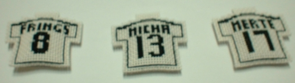

원본 크기 3264x2448 이니 반드시 클릭해서 크게 봐야 함.

+ 촬영장 사진
http://www.snapfactory.de/Web-Fotogalerie/2007-07-30/index.html
http://www.fussballfreaks-online.de.vu/
http://www.werder.de/aktuelles/bildergalerie/player/index.php?id=150
+ 촬영 현장 동영상
http://forum.werder.de/viewtopic.php?t=32241
-> http://rapidshare.com/files/45988603/Sportblitz-Thema_Mannschaftsfoto-Tag_der_Fans.divx 에서 일부 잘라냄.
[보기]
그걸 보고 나도 해 볼까 하는 마음을 품은지는 꽤 되었지만 지난 주말에야 처음 해 봤다.
십자수 가게에 가서 어리버리 구경하며 주인에게 말 붙일 틈 찾는데 3분, 재료 사는 데 30초, 십자수 놓는 법 배우는데 1분 정도 걸렸다 -_-;
| 실(검정,빨강,노랑) | 1,350 | (1개당 450원) |
| 바늘 | 200 | |
| 바탕천 | 1,000 | (8cm x 24 cm 정도) |
| 솜 | 300 | (한 주먹 정도) |
| 줄 1개 | 300 | |
| 합계 | 3,150 | 원 |
원래 도안은 LAHM 마킹이었지만 나는 당연히 MICHA로 첫 작품을 시도.
뒷면의 3자 예쁘게 만드느라 나름 고심했다.
이런 작은 도안 그릴 때는 엑셀이 쓸만했다. 내가 평소 제일 많이 쓰는 프로그램이라서 그럴 수도 있지만.
그런데 솜 넣고 나서 둘레를 홈질하다보니
박음질로 해 놓은 도안의 테두리와 겹쳐서 선이 두꺼워지는 문제가 생겼다.
그래서 두번째로 MERTE 만들 때는 테두리를 박음질이 아닌 홈질로 해서
나중에 둘레를 홈질하고 나면 완전한 선이 나오도록 했다.
홈질은 앞뒤로 바늘땀이 번갈아 나타나니 테두리 홈질할 때 이걸 고려해야 한다.
하다보니, 꼭 십자가 아니라 사선으로 할 수도 있겠다는 생각이 들었다.
글자수도 많고 해서 고심하던 FRINGS 만들면서 한 번 해 봤는데 괜찮은 듯 싶다. 왼쪽 가슴의 무늬도 조금 간단하게 하고.
3개 완성. 줄은 아직 안 달았다.


만들어놓고 보니 좀 크다. 4cm x 4cm 정도 된다.
십자가 아닌 박음질을 주로 쓰면 작게 할 수 있겠다 싶어
간단히 도안을 만들어보았다.
바늘땀 수가 적어서 금방 만들어지긴 하는데,
몇 땀 뜨지도 않고 끝내야 하다 보니, 수 놓는 시간보다 마무리하는 시간이 더 걸리는 듯.
완성. 동생 줬다.
나도 얼른 하나 만들어 달아야지.
천은 작은 것 2개 더 만들 수 있을 정도로 남아 있다.
+ 도안 첨부 (엑셀 파일) : cross.xls
Fritz와 Boro는 도안만 만들어놓고 아직 못 만들었다.
독일 국대들 다 만들고 싶지만 글쎄 언제?
+ http://www.goal.com/en-US/Articolo.aspx?ContenutoId=365402
얼마전 레알 마드리드 감독으로 취임한 베른트 슈스터가 "미하엘 발락 같은 선수가 필요하다"고 한 마디 한 것이
"슈스터, 발락을 원한다"로 둔갑하더니 소문이 계속 떠도는 중이다.
+ 오늘 뜬 한글 기사 : "첼시, 적절한 제의라면 발락 줄 수 있다"
http://sports.media.daum.net/nms/worldsoccer/news/general/view.do?cate=23772&type=&newsid=121738
우리나라 인터넷 기자들의 미샤에 대한 애정이 나보다 적은 거야 당연하다고 치고,
영어 독해도 나보다 한참 떨어진다고 확신하는지라 -_-;
이런 기사 보면 원문 안 찾고는 못 배긴다.
잠시 찾아보니 이 한글 기사는 못 믿을 소스로 유명한 tribalfootball을 보고 쓴 게 99% 확실하다.
http://www.tribalfootball.com/article.php?id=49509
무리뉴가 직접 인터뷰한게 아니라 '무리뉴가 ...이다'라고 첼시의 '어느 소식통'이 말했다는 건데?
Observer 원문은 아래에. 아무리 '어느 소식통'이 말한 거라지만 마음 아픈 얘기이긴 하다 ㅜㅜ
http://football.guardian.co.uk/News_Story/0,,2137293,00.html
'No offer will be made for Michael Ballack' by Real Madrid, according to an executive at the Bernabeu. Bernd Schuster, Real's new coach, said last week that he would be interested in taking the Chelsea midfielder to Spain. But the executive said: 'He is the coach, not the one who makes the decisions at the club. We do not plan to make an offer. It is not going to happen.'
Ballack could still be on the move. Jose Mourinho 'is willing to let him leave if he receives the right offer - but nobody has asked him' a source at Stamford Bridge confirmed last night, indicating that if the German - named as one of the Chelsea coach's untouchables last season - does not leave he is likely to be relegated to the substitute bench.
+ 이젠 첼시가 미샤의 이적료로 2천 7백만 파운드(4천만 유로)를 요구한다는 소문까지.
http://www.all3points.co.uk/cat/chelsea/bal300707.php
http://www.bild.t-online.de/BTO/sport/2007/07/30/ballack-real-schuster/40-millionen-transfer,geo=2222128.html
+ 팀소개: http://www.afcasiancup.com/kr/tournament/teams.asp?cid=1376&sqid=882&ccd=KOR&tbl=Y
- Coach: Pim Verbeek
- Goalkeepers: 1 이운재 / 21 김용대 / 23 정성룡
- DF: 2 송종국 / 3 김진규 / 4 김동진 / 13 김치곤 / 14 김상식 / 15 김치우 / 16 오범석 / 22 강민수
- MF: 6 이호 / 8 김두현 / 10 이천수 / 17 김정우 / 20 손대호 / 27 오장은
- FW: 7 최성국 / 9 조재진 / 11 이근호 / 12 이동국 / 18 우성용 / 19 염기훈
+ D조: 인도네시아 / 대한민국 / 사우디아라비아 / 바레인
/ 후반 초반까지는 대한민국의 공세였던 듯. 66분 최성국의 선제골. 그러나 77분에 페널티킥을 내주고 만다.
선제골 전까지 조재진이 분투했으나 득점에는 이르지 못했다.
정작 이 날의 하이라이트, 아니 로우다크는 80분쯤 경기장 조명이 나가버려서 거의 30분 동안 경기가 중단되었던 것. 참으로 어이없는 일이었다.
/ afcasiancup.com 데이터시트
/ 일요일인데 출근해서 일하다가 좀 늦게 와서 전반 10분쯤부터 보기 시작했는데 벌써 0:1. 웬일이래니.
하지만 그 뒤로 영 신통치 않았다. 후반 초반에는 좀 밀어붙여보는 듯 했지만. 이상하게도 선수들에게서 이기고야 말겠다는 열망이 별로 느껴지질 않는 지루한 경기였다. 결국 역전패. 8강은 물건너간 것인가.
베르더 브레멘도 FC 바젤과의 평가전에서 2:0으로 패배했고. 우울한 소식만 쌓이고 있다.
/ afcasiancup.com 데이터시트
/ 오늘은 이전 경기들보다 두시간 일찍 시작했는데 퇴근이 늦어져서 마지막 10분 정도 밖에 보지 못했다. 33분에 김정우가 득점했다는데 그대로 0:1 종료. 사우디 아라비아가 바레인을 4:0으로 잡아준 덕분에 기사회생, 조 2위로 8강 진출. 상대는 C조 1위가 될 텐데 아직 누가 될 지 모른다.
/ afcasiancup.com 데이터시트
+ 대한민국 8강전
/ 비가 참 많이 쏟아지더라. 어차피 볼 컨트롤 잘 못하는데 비 오면 우리나라에게 좋은 일이라는 게 나의 진담섞인 농담이었다. 욕 많이 먹던 수비진이 오늘은 그런대로 막아준 것 같다. 하지만 4경기 치르도록 3골 뿐이고, 그것도 중앙공격수에게서는 한 골도 나오지 못하다니 좀 답답하다.
승부차기는 역시 에이스가 실패하는구나. 개인적으로는 김상식과 조재진이 승부차기를 성공시켜서 기뻤다.
그나저나 비가 그렇게 많이 오는데 연장전까지 뛰었으니 선수들 체력이 걱정이다.
/ afcasiancup.com 데이터시트
+ 대한민국 준결승
/ 졌다.
/ afcasiancup.com 데이터시트
+ 대한민국 3,4위전
/ 안타까웠다. 3경기 연속 연장전이라니. 그것도 이번에는 한 명 퇴장까지 당한 상태로. 답답함보다는 안스럽고 안타까운 마음이 더 했다. 나이 어린 선수들이 -- 내겐 동생 뻘도 아니고 거의 조카 뻘이다 -- 가엾어서, 골 먹어도 좋으니까 빨리 끝나길 바라기까지 했다. 그렇지만 결국 또 승부차기까지 갔다. 이라크 전 승부차기는 조마조마해서 못 봤지만, 오늘은 선수들이 애처로와서 이기든 지든 끝까지 보리라 마음먹었다. 양 팀 다 다섯번째 키커까지 모두 성공. 참 이러기도 드물지 싶다.
그리고 결국은 6:5로 이겼다. 고생했다 정말. 이것저것 모두 잊고 며칠은 푹들 쉬기를.
/ afcasiancup.com 데이터시트
+ http://www.werder-online.de/aktuelles/news/meldung.php?id=11164
팀 보로프스키의 부인 레나가 지난 일요일(7/22)에 딸을 순산했다고.
리가포칼 경기 끝나고 집에 와서 쉬고 있는데 레나에게 진통이 왔다고 한다.
아기와 산모 모두 건강하단다.
딸의 이름은 Emilia, 키 56 cm에 몸무게는 3.8 kg 이란다.
Herzlichen Glückwunsch!
(라고들 포럼에서 많이 축하해주더라. 번역기 돌려보니 Sincere Congratulation! 라는 뜻이라고 함)
| < 이전페이지 | 다음페이지 > |